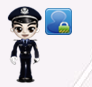
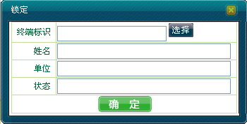
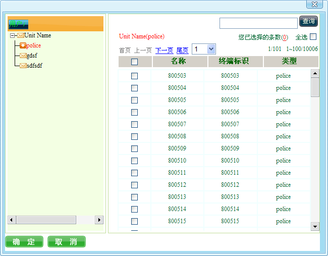
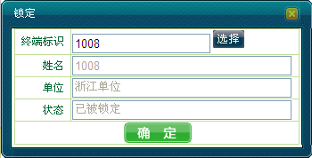
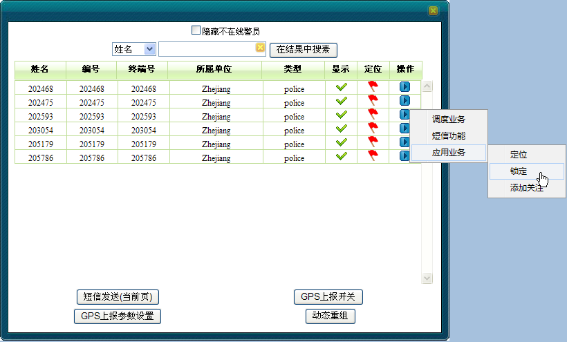
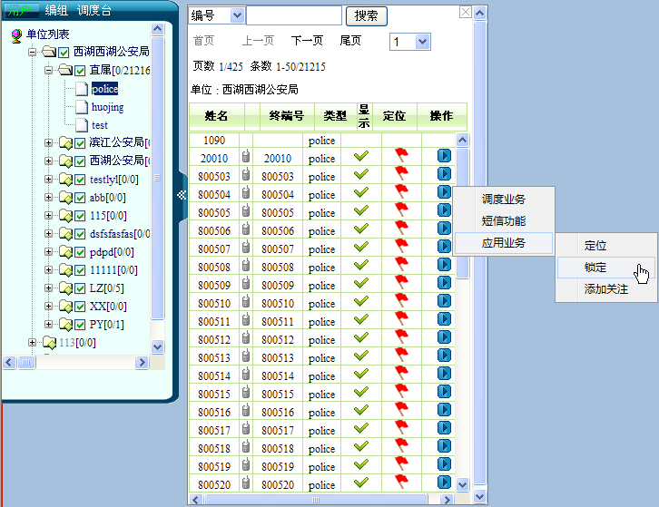

调度员可对单个移动用户执行锁定跟踪模式，使得被锁定的移动用户有特殊的标记，以区别未被跟踪的移动用户，而且地图会不断地自动调整，以确保处于锁定状态的移动用户始终处于可见区域。调度员亦可在不需要时取消用户的锁定模式。
调度员可通过多种方式实现锁定，包括：
其中各种方法可进行交叉操作。
1）在地图上选中移动用户。
2）右键单击［应用业务/开启锁定］，此时在用户的右上角会出现一个锁定的图标，如下图1所示。当用户离开当前视图时，地图的中心位置会立即定位到该用户所在的位置。

图1. 开启锁定
3）若不需要锁定该用户，则右键单击［应用业务/关闭锁定］，锁定图标消失。
1）在系统操作菜单栏中单击［调度功能/呼叫面板］，弹出“呼叫面板”对话框。
2）单击“应用业务”模块中的“锁定功能”，弹出“锁定”对话框，如下图2所示。

图2. 锁定对话框
3）直接输入用户标识号或在终端标识右侧单击＜选择＞，弹出“用户/终端/调度台”对话框，添加要开启锁定的移动用户，如下图3所示。

图3. 选择用户
4）单击＜确定＞按钮完成添加。“锁定”对话框中显示当前用户的锁定状态，如下图4所示。

图4. 锁定状态
5）单击＜确定＞，则开启跟踪锁定功能，并在用户右上角会出现一个锁定图标。当用户离开当前视图时，地图的中心位置会立即定位到该用户所在位置。
6）若之前用户是锁定状态，则按上述步骤操作，单击＜确定＞后，则将解锁成功，出现在用户右上角的锁定图标消失。
1）在地图上框选移动用户，该区域内被选中的所有用户（包括显示和隐藏的）都将呈现在用户列表中。
2）单击“选中用户列表”中要锁定的用户右侧三角按钮，选择［应用业务/锁定］，如下图5所示。

图5. 对框选用户进行锁定
3）此时列表中锁定用户姓名侧出现锁的图标“”，地图中用户的右上角出现一个锁定的图标。当用户离开当前视图时，地图的中心位置会立即定位到该用户所在的位置。
4）若不需要锁定该用户，则在列表中对锁定用户选择［应用业务/解锁］，锁定图标消失。
1）在成员树中找到要锁定的用户，单击右侧三角按钮。
2）选择［应用业务/锁定］，如图6所示。

图6. 对成员树中用户进行锁定
3）此时地图上的用户右上角会出现一个锁定的图标。当用户离开当前视图时，地图的中心位置会立即定位到该用户所在的位置。
4）若不需要锁定该用户，则在成员树中对锁定用户选择［应用业务/解锁］，锁定图标消失。
 说明：
说明：
只能对单个移动用户进行锁定跟踪。只有对上个用户进行解锁后，才能对下个用户实现锁定功能。
锁定移动用户后，调度员不可放大缩小地图。
若用户经纬度为0或不存在，则无法锁定。
Copyright © 2012 Eastcom, Inc. All rights reserved. |
||